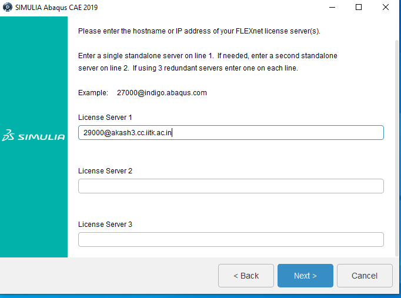
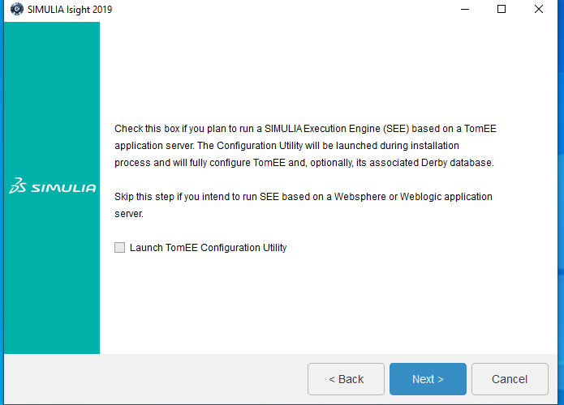

Abaqus 2019
Note: It is mandatory to install the Abaqus 2019 documentation and software in the given preference.
* Abaqus Simulation Services
* Abaqus Simulation Services CAA API
* Abaqus /CAE
* fe safe
* Tosca
* Isight
The Abaqus 2019 software and documentation is zipped and available for download from CC ftp site. And Extract the Zipped file to local drive.
1. Go to Abaqus Documentation folder and run the setup.exe and click on next Button.
2. Continue with the following selected products and click on Next Button.
3. Click on Install button.
4. Click on Next button for Abaqus Simulation Services Installation.
5. Click on Next button.
6. Click on Install button.
7. Abaqus Simulation Service installation wait few minute.
8. Click on Close button.
9. Click on Next button for CAA API Abaqus Simulation Services installation.
10. Click on Next Button.
11. Click on install button.
12. CAA API Abaqus Simulation Services Installation process running.
13. Click on Close button.
14. Click on Next button for Abaqus CAE Installation.
15. Select SIMULA FLEXnet and Click on Next button.
16. Enter the licence server 1 (licence server is:29000@akash3.cc.iitk.ac.in) and click on Next Button.

17. Click on Next button.

18. Click on Next button.

19. Click on Next button.
20. Click on Next button.
21. Click on Next button.
22. Click on install option.
23. SIMULA Abaqus CAE Installing process running.
24. After installation then click Close button.
25. Click on Next button for fe safe 2019 installation.
26. Continue with the default selection and click on Next button.
27. Click on Install Option.
28. SIMULIA fe-safe installation process running. Wait a few minute.
29. Click on Close button.
30. Now we Install SIMULIA TOSCA 2019 . Click on next button.
31. Select Skip documentation configuration for now option and click on Next button.
32. Selected the Components you want to install in directory. We selected both tosca Fluid and Tosca Structure. Click on Next button.
33. Click on Next button..
34. Click on Next button.
35. Click on Install button.
36. The Installation process SIMULIA Tosca 2019 is running.
37. SIMULIA Tosca 2019 installation process has finished and click on Close button.
38. Now Install Isight 2019. Click on Next button.
39. Select the components you want to install. Click on Next button.
40. Click on Next button.

41. Click on Next button.
42. Select Skip documentation configuration for now and click Next button.

43. Click on Install button to install SIMULIA Isight 2019.
44. Installation Process Running SIMULIA Isight 2019.
45. SIMULIA Installation has finish and Click on Close button.
46. All media are successfully installed . Click on Close button.
47. Preview of the Software is: